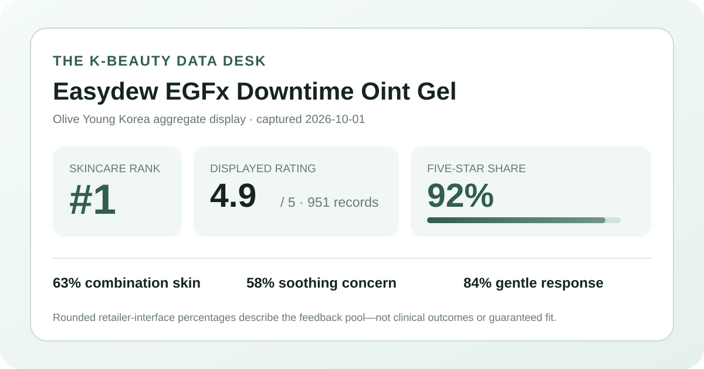
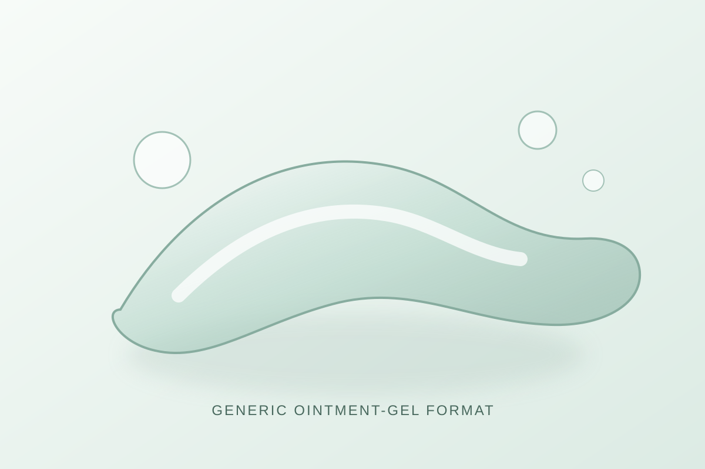

Data captured October 1, 2026. This is an independent analysis of retailer-displayed product information and anonymous aggregate review signals. I did not test the product, and no individual review, reviewer name, product photograph, or user photograph is copied or translated.

The short version: Easydew EGFx Downtime Oint Gel appeared at number 1 in Olive Young Korea's live skincare sales ranking. The product header and detailed review view both displayed 4.9 out of 5 from 951 review records. The detail panel showed a 92% five-star share, while the largest shopper-poll responses were combination skin at 63%, soothing at 58%, and gentle at 84%. These are favorable storefront signals—not proof of soothing, repair, healing, treatment, or individual tolerance.
A displayed 4.9 is a rounded storefront average, not a laboratory result or a guarantee. The separate distribution gives the number more context: 92% of the displayed selections were five-star, 5% were four-star, and 2% were three-star. The two lower categories each displayed 0%. The visible shares total 99%, a normal consequence of independently rounded percentages rather than evidence that a category is missing.
The 951-record base is substantial enough to be more informative than a new listing with only a handful of responses. It is still a self-selected pool from one retailer listing. People who bought, received, reviewed, or skipped the product may differ in ways the page does not reveal. The capture also cannot establish verified-purchase composition, campaign participation, how responses were moderated, or whether every record refers to the same promotion and package.
A 0% display for one- or two-star selections does not prove that no such ratings exist. A small count can round down at the interface precision shown. Likewise, a top-heavy distribution cannot explain why people selected a score. It should not be converted into claims about skin recovery, wound care, acne, redness, pigmentation, barrier function, or any other clinical outcome.
Combination skin was the largest displayed skin-type response at 63%, followed by dry skin at 26% and oily skin at 11%. That is a description of representation among respondents who answered the poll. It does not show that the product is best for combination skin, nor does it tell us how shoppers defined their skin type, whether that classification changed by season, or whether all 951 reviewers participated.
Soothing led the displayed concern poll at 58%, while moisturizing and wrinkle/brightening each showed 21%. These are retailer interface categories, not instrumental measurements. The soothing share cannot demonstrate reduced inflammation or redness, and the moisturizing share cannot be translated into a measured hydration increase or duration. The tied 21% categories should be read as rounded responses, not equal clinical effects.
The irritation panel showed 84% selecting the gentle response, 16% ordinary, and 0% felt irritation. That is favorable perception data within the captured poll, but it cannot guarantee compatibility. The exact denominator was not shown, and the interface does not provide standardized patch-test conditions, ingredient sensitivities, diagnoses, concurrent routines, or exposure amounts. A rounded 0% felt-irritation share is not zero risk.

The listing identifies the item as a 30 ml “oint gel,” which supports only a broad ointment-gel format description. I did not dispense it, spread it, layer it with another product, smell it, observe drying time, or compare its slip, tack, occlusion, residue, or finish with a cream, balm, serum, or pharmacy ointment.
The local visual is deliberately abstract and brand-neutral. It uses a translucent ribbon and rounded forms to communicate the general idea of a gel-like topical format without copying the product, its bottle, advertising, or photographs. The illustration should not be used to predict the actual material's appearance or behavior.
“EGFx,” “downtime,” and “oint gel” are listing language. They are not measurements. The page capture does not establish what the letter-and-number styling means for formulation, concentration, delivery, or biological activity. Rating and ranking data cannot validate a mechanism suggested by naming.
The review view exposed the aggregate rating, total, star distribution, and three shopper polls. This article does not reproduce, translate, or paraphrase individual review text and does not identify any reviewer. It also does not use review photographs or product photographs. A visible feed is a small, ranked subset rather than a neutral summary of all 951 records.
No reliable retailer-level anonymous theme summary or stable positive-classification percentage was visible in the captured detail panel. Consequently, this article does not invent one by reading a few comments. The analysis stays with aggregate interface values that can be reported consistently and with the limitations that follow from them.
The captured header showed a 30 ml listing with a ₩40,000 reference price and a ₩31,000 promotional price, displayed as 22% off. The page also marked the item as new and showed delivery and gift information. Offers, stock, shipping, gifts, coupons, membership prices, and campaign terms can change, so the capture is a dated snapshot rather than a permanent value claim.
Rank one means the listing had the top position within the selected Olive Young Korea skincare sales ranking at capture time. It does not mean best skincare overall, best for a condition, most reviewed, most effective, or safest. Rank can move with launches, promotions, availability, advertising, bundles, and the exact category filter. A new listing can rank highly while having fewer accumulated reviews than older products.
This analysis did not independently capture and reconcile a complete current ingredient list for every package or market. No ingredient concentration, purity, stability, penetration, signaling activity, or therapeutic effect is estimated from the product name, product category, price, rating, or rank. The captured data do not support claims about tissue regeneration, wound healing, scar treatment, post-procedure recovery, acne treatment, or reduction of pigmentation.
No claim is made that the item is fragrance-free, alcohol-free, oil-free, non-comedogenic, hypoallergenic, sterile, pregnancy-compatible, procedure-compatible, or appropriate for eczema, rosacea, acne, infection, open wounds, broken skin, or another medical concern. Check the current authorized label for ingredients, directions, cautions, intended use, and storage. For a diagnosed condition, recent procedure, prescription routine, or history of severe reactions, consult a qualified clinician or pharmacist.
The captured product header and detailed review view both displayed 4.9 out of 5 from 951 linked records. The distribution was strongly top-heavy at 92% five-star, but a rating does not establish efficacy or fit for one person.
Combination skin led the displayed poll at 63%, followed by dry skin at 26% and oily skin at 11%. Those values describe representation among responses rather than a suitability ranking.
No. It is a rounded aggregate perception response from an unspecified poll denominator. Individual ingredients, skin conditions, routines, and exposure can differ, and a retailer poll cannot predict personal tolerance.
No. The rank reflects sales position in a particular skincare list at one moment. It may be influenced by a launch, promotion, gifts, availability, or visibility and is not evidence of a medical or clinical outcome.
No. It is a local, brand-neutral visual for the general ointment-gel concept. It does not reproduce the product or predict its real texture, color, scent, finish, ingredients, or behavior.
Source: Olive Young Korea product listing for Easydew EGFx Downtime Oint Gel 30 ml, accessed October 1, 2026. The source is a dynamic retail page; rank, price, availability, gifts, counts, and percentages can change after capture.
This independent article is unaffiliated with Easydew or Olive Young. The store link contains no affiliate tracking identifier, and this site earns no commission from it.
← Back to all posts · Review-volume rankings · Skin-poll representation · Methodology